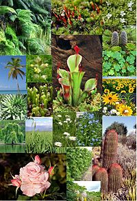
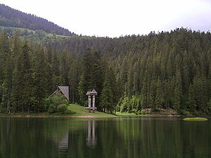
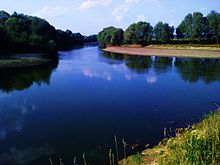
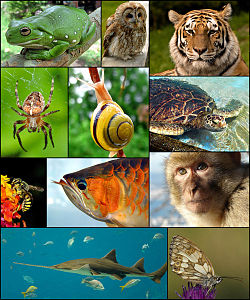

Приро́да
Приро́да — багатозначний термін, що в залежності від контексту, може означати: У широкому розумінні природа — органічний і неорганічний матеріальний світ, Всесвіт, у всій сукупності і зв'язках його форм, що є об'єктом людської діяльності і пізнання, основний об'єкт вивчення науки, включно з тим, що створене діяльністю людини.Нежива природа
Життя виникло внаслідок складних геологічних і хімічних процесів на поверхні Землі, й само суттєво змінило планету. Атмосфера Землі, основною складовою якої спочатку був вуглекислий газ, внаслідок діяльності живих організмів перетворилася в азотно-кисневу. Енергію Земля отримує від двох важливих джерел — від Сонця у вигляді сонячної радіації та внутрішнього тепла, яке виділяється при радіоактивному розпаді в її надрах.

Атмосфера, клімат і погода
Атмосфера Землі є ключовим фактором у підтримці планетарної екосистеми. Тонкий шар газів, що оточує Землю, утримується під дією сили тяжіння нашої планети. Сухе повітря атмосфери складається з 78 % азоту, 21 % кисню, 1 % аргону, вуглекислого газу та інших сполук в незначних кількостях. Також повітря містить непостійну кількість водяної пари.
Кліматичні пояси
Вісь Землі нахилена відносно площини екліптики, і при своєму обертанні навколо Сонця, Земля повертається до нього то одним, то іншим полюсом. Внаслідок цього температура на поверхні Землі змінюється в широких межах від екватора до полюсів. Наука кліматологія виділяє на поверхні землі кліматичні пояси, для кожного з яких існує характерна область температур та їх зміни з порами року.
Вода
Вода — хімічна речовина, що складається з водню і кисню і необхідна для життєдіяльності всіх відомих форм життя. У звичайному розумінні термін вода співвідноситься тільки з рідкою формою або станами, однак речовина також має твердий стан (лід) і газоподібний — водяна пара.
Океани
Океан вміщує основну масу солоної води Землі, а також є основним компонентом гідросфери. Хоча загальновизнаним є поділ водного простору Землі на кілька окремих океанів, але разом вони складають один глобальний, пов'язаний між собою масив солоної води, часто званий Світовим океаном або глобальним океаном.Озера
Озеро— компонент гідросфери, що являє собою природну або штучно створену водойму, заповнену в межах озерної чаші (озерного ложа) водою і яка не має безпосереднього з'єднання з морем (океаном). На Землі водойму вважається озером в тому випадку, коли вона не є частиною Світового океану, при цьому воно більше і глибше, ніж ставок, а також живиться водами річок.
Річки
Річка — природний водний потік (водотік), поточний у виробленому їм поглибленні — постійному природному руслі і живиться за рахунок поверхневого та підземно го стоку з його басейну. Зазвичай річка впадає в океан, море, озеро або іншу річку, але в деяких випадках вона може губитися в пісках або болотах, а також повністю пересихати, не досягнувши іншої водойми.
Жива природа
Жива природа (життя, жива матерія) — це будь-яка сукупність організмів, які можуть існувати не лише на Землі, а й (гіпотетично) на інших планетах і космічних тілах. Жива матерія характеризується фундаментальними законами відтворення та передачі генетичної інформації. Основними ознаками живого є структурованість (клітинна будова, окрім вірусів), метаболізм (активний обмін речовин), адаптація та відтворення.